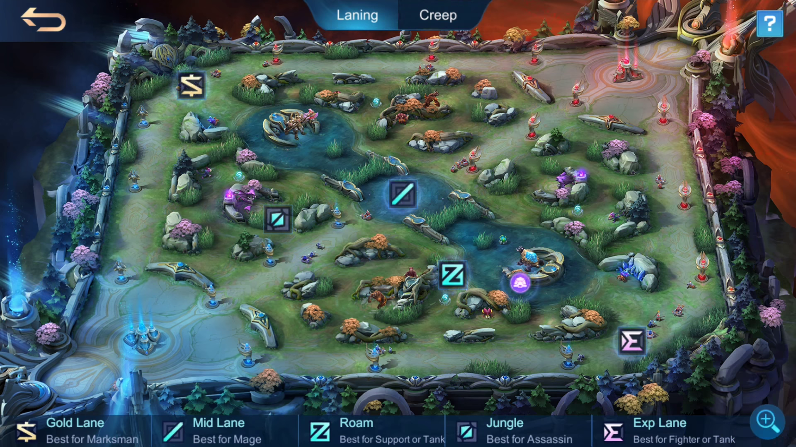

MLBB is a 5v5 MOBA game which aims to destroy the opposing teams turret
MOBILE LEGENDS BANG BANG
Hover the + button on each role marker to learn about each lane.

The Gold Lane is commonly played by Marksmen who need gold to purchase items.
The main goal is to farm safely and become a strong damage dealer.
The Mid Lane is usually occupied by Mages or heroes who can clear waves quickly.
Mid Laners rotate around the map and help support other lanes.
The Jungler farms monsters in the jungle to gain gold and experience.
They also help teammates through ganks and secure important objectives.
The Roamer moves around the map and supports teammates.
Roamers commonly provide protection, vision and crowd control.
The EXP Lane is usually occupied by durable Fighters who can survive alone.
Heroes in this lane gain experience quickly and become stronger during the early game.
LANE BREAKDOWN